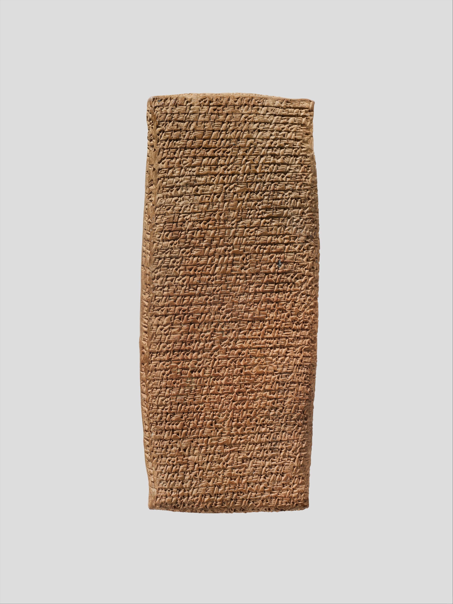
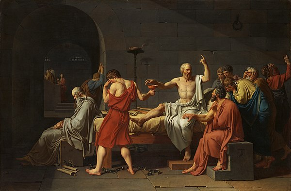

Reasons for Courts
Week 1
What are courts?
Mohr defines courts as
a family of passive governmental institutions one of whose prominent functions is the settlement of disputes, distinguished from other governmental institutions by a commitment to decide impartially, after presentation of proofs and arguments by contending parties, and to be able to justify decisions according to pre-existing rule.1
What are courts?
Let’s distil the main elements from this definition:
“governmental”
“institutions” (= organizations)
core function = dispute settlement
impartiality
arbiter between parties
justify decisions with pre-existing rules
What are courts?
“governmental”
could exclude international courts if understood strictly
seemingly excludes private adjudication and mediation, even if a strong public interest function exists (e.g. Meta Oversight Board)
What are courts?
a court is an organization
a single individual is not a court
can there be ‘judges’ without courts? E.g. travelling judges in far-away Roman and Byzantine provinces
organizations have some degree of permanency, physical resources (buildings, staff, etc.), rules of procedure, informal practices
Alternative definition
The Court of Justice of the European Union has developed its own definition of a ‘court or tribunal’:
[…] in order to determine whether a body making a reference is a ‘court or tribunal’ […] the Court takes account of a number of factors, such as, inter alia, whether the body is established by law, whether it is permanent, whether its jurisdiction is compulsory, whether its procedure is inter partes, whether it applies rules of law and whether it is independent […]2
Alternative definition
Some similarities, some differences:
established by law
permanent
compulsory jurisdiction
inter partes (between parties)
applies rules of law
independent
Brief history of courts
the behaviour of a third-party arbiter mediating disputes long pre-dates the invention of syntactic language (~ 70 000 BCE) and has been also observed among non-human primates3
it is a type of pro-social behaviour which can arise from a concern for the community or as a non-violent avenue to power
the development of religious practices and the role of priests were among the earliest forms of ‘law’ (at first purely oral/physical) and ‘judges’, possibly as early as 50 000 BCE
Brief history of courts
in early societies a key concern was the regulation of retaliation4
submission to arbitration or a community “judge” requires coordination
risk of blood-feud spirals at family level
similarities with 20th century international law (state retaliation)
emergence of institutionalized retribution
- most famously in the Babylonian Code of Hammurabi (“eye for an eye”)
Brief history of courts
the creation of codified laws meant that sophisticated judicial institutions were in place in Mesopotamia at least as early as 2100 BCE
multiple jurisdictions, professional judges only one kind of judges
widespread use of arbitration (private justice institutions) limited recourse to court litigation
public trials (criminal and civil) with evidence, witnesses and adversarial parties, some supernatural elements
Lawsuit in 19th century BCE

Lawsuit in 19th century BCE
From the website of the Met Museum:
This tablet, the longest extant Old Assyrian legal text, represents one such document and records court testimony describing a dispute between two merchants. This testimony was delivered before witnesses representing the authority of the merchant government in Kanesh as well as the dagger of the god Ashur. In the text, Suen-nada and Ennum-Ashur accuse each other of stealing the valuable contents of a private archive which they both claim to own. Items within the archive include cylinder seals, tablets belonging to various named merchants, and tablets belonging to strangers that were deposited there for safe keeping. As undisturbed tablet storerooms are extremely rare, this text is important for reconstructing the contents of a sealed archive. Ennum-Assur calls for the case to be moved to Ashur to be tried in front of the city assembly and king, but unfortunately the verdict of the court is unknown.
Ancient Greece
coexistence of voluntary private arbitration and emergence of compulsory polis jurisdiction
court jurisdiction was to some extent separate from enforcement (public justice, private enforcement)
a judgment could for example certify one party’s right of retribution (e.g. enslavement of the offender)
judgments were frequently difficult to enforce as a result, but NB the social function of trials
Mostly drawing on Wolff (1946) who makes the point that Greek courts were merely settling disputes but not ordering litigants to do anything. Litigants would request the court to certify their private enforcement action (self-help).
Ancient Greece
the most important disputes were litigated as public trials before a significant number (100s to 1000s) of jurors, but geographical and temporal variation
written laws were generally sparser and more vague than in the Roman world
a notable element of ancient Greek judiciary is the absence of a professional legal class
litigants largely represented themselves before lay jurors who also decided the dispute (but they could hire speechwriters)
rhetorical skills were nonetheless a central element of the trial
This is a great source: https://www.unpredictableblog.com/blog/Athens Also: https://acoup.blog/2023/04/07/collections-how-to-polis-101-part-iic-the-courts/
“Supreme Court” of Ancient Athens
Heliaia, founded in the middle of the 500s BCE
at its largest consisted of 6001 members chosen annually by lot from men over 30
public, transparent gatherings where oral arguments were presented and informally discussed
at the end of the trial, jurors5 cast their ballot regarding the decision which was by majority
magistrates handled the administration of the procedure (e.g. court calendar), but also decided minor (and homicide) cases in smaller courts
Most of our knowledge of ancient Greek judiciary comes from Athens starting in about 600 BCE. From the time of Pericles (5th century BCE), jurors were paid for service.
The Trial of Socrates (399 BCE)

Ancient Rome
during the Roman Kingdom era (753-509 BCE), the king had absolute power and was thus the ultimate judge
proliferation of Roman law (public and private) from about 300 BCE in response to territorial and economic growth
magistrates (public officials) organized the first (pre-trial) stage of a trial
plaintiffs would come to them to request a remedy for a perceived infringement
defendants needed to consent to the litigation (but could be compelled)
the magistrate would describe the action and pass it onto the judge
the judge(s) was jointly agreed on by the parties
lay judges heard witnesses and made decisions in public
a powerful class of jurists – law experts – advised on what (they argued) the law was and advocates who argued on behalf of their clients
Quick overview
| Greece | Rome | Modern | |
|---|---|---|---|
| Judges | ❌ | ✅ | ✅✅✅ |
| Juries | ✅✅ | ✅ | ✅ |
| Appeals | ❌ | ❌ | ✅ |
| Lawyers | ❌ | ✅ | ✅✅ |
| Oratory | ✅✅ | ✅ | ✅ |
| Form | Oral | Oral | Written |
| Precedents | Very limited | Limited | Common |
Pre-modern “trials”
there were decidedly pre-modern types of “trial” in the Middle Ages and before, typically mixing law, courts and religious beliefs
trial by oath: defendants could establish their innocence by taking an oath and getting a required number of people (often 12 in Europe, up to 50 in early Islamic law) to swear they believed the oath. Found in some countries as late as the 19th century
trial by ordeal: the accused was subjected to an (extremely) unpleasant experience to establish their innocence/guilt. Abolished in England after 1219
trial by combat: the winner of the fight was presumed to be legally “right”
Peter Leeson makes the argument that ordeals were actually effective judicial tools
the guilty knew they would not pass the ordeal -> admitted guilt
the innocent expected God to intervene (eg not be burned by boiling water) -> took the ordeal
the ordeal was gamed by priests, so that many of those taking it would pass. The issue with the argument is that the priest was the de facto judge by choosing whether to make water hot or cold and subsequently evaluating the injury
Trial by ordeal
most common types were trial by fire and trial by water, with many different variations on both
trial by fire: e.g. walking on red-hot metal, documented extensively in Medieval Europe, ancient Iran, India, Cambodia and elsewhere
trial by water: e.g. retrieving an item from boiling water or being thrown in cold water, documented in Mesopotamia, India, France, England, etc.
if the wound was festering a few days later, this was usually taken as evidence of guilt
Trial by boiling water
Emergence of common law in England
body of law developed by judges through precedent (case law)
in the 1150s, Henry II (King of England) began sending judges from the royal court in London to the rest of the country to decide disputes
over time, the judges built up a corpus of decisions which they perceived as binding (precedent) when a similar factual situation arose in a new case
this “common” law gradually replaced divergent local laws and customs throughout the kingdom
Emergence of common law in England
the common law system originally served by far the most the interests of the king
it empowered judges, who could invoke the king’s authority, to an unprecedented degree
the rule of binding precedent solidified the sense of judges’ belonging to a distinct and autonomous professional class (though guarantees of judicial independence were lacking until 1701)
by the time the Parliament built its legislative authority and Roman law was rediscovered in the 13th century, common law was sufficiently well developed to remain the primary source of law for centuries
Civil law systems
legal systems emerging from the idea of the primacy of codified written rules, notably the civil code
much of European (and beyond) law has its roots in the Corpus Juris Civilis (534 CE, aka Code of Justinian) and in the related Napoleonic Code (1804)
no binding precedent and judge-made principles – the judge as “the mouthpiece of the law” (Montesquieu)
Modern courts
considerable convergence between civil and common law traditions over the last two centuries
even if not formally binding, civil law judges aim for consistency with previous decisions which are often de facto treated as precedents
statutory law made by parliaments is nowadays the most important source of new rules in common law countries and feature heavily in judicial decisions
the principle of judicial independence as the cornerstone of the modern judiciary
variation in the prevalence of juries and judicial review
Judicial review
Written constitutions
but the idea of distinguishing a higher law (historically often tied to religious beliefs) and lower, man-made law dates back to at least ancient Greece; natural law vs positive law
the constitutional innovation lies in the “positivization” of what could have been considered natural law before
Marbury vs Madison
French judges pre-revolution were big supporters of the ancien regime, which made them particularly disliked by the Enlightened thinkers
In contrast, in England judges were seen as relatively anti-monarchy and many of them would view judge-made common law as more important than statutes and decrees, which was a political problem for the King and the Parliament
Notes
what many early versions of courts (pre-Greece) had in common was overlap with or supervision by governmental authority. Aka no judicial independence: this is the key struggle
Greek jurors were very independent from the “government”, but the government itself was mostly weak because direct democracy with elected officials for everything every year
there was very little in the way of using judicial precedents in Greece and only limited practice in Rome
trials fulfilled important social functions:
- social control: the subjugation of disputes to community laws and justice, they could be shameful for the parties as well, which induced settlements
- immersing citizens (especially in Greece) in the exercise of justice (responsibilizing citizens)
Footnotes
Mohr, Lawrence B. “Organizations, decisions, and courts.” Law & Society Review 10, no. 4 (1976): 621-642, p. 623.↩︎
Case C-132/20 Getin Noble Bank [2022] ECLI:EU:C:2022:235, para 66.↩︎
Von Rohr, Claudia Rudolf, Sonja E. Koski, Judith M. Burkart, Clare Caws, Orlaith N. Fraser, Angela Ziltener, and Carel P. Van Schaik. “Impartial third-party interventions in captive chimpanzees: a reflection of community concern.” PloS one 7, no. 3 (2012): e32494.↩︎
Wolff, Hans Julius. “The origin of judicial litigation among the Greeks.” Traditio (1946): 31-87.↩︎
The Wasps by Aristophanes is a Greek play about an old man who is addicted to jury service.↩︎